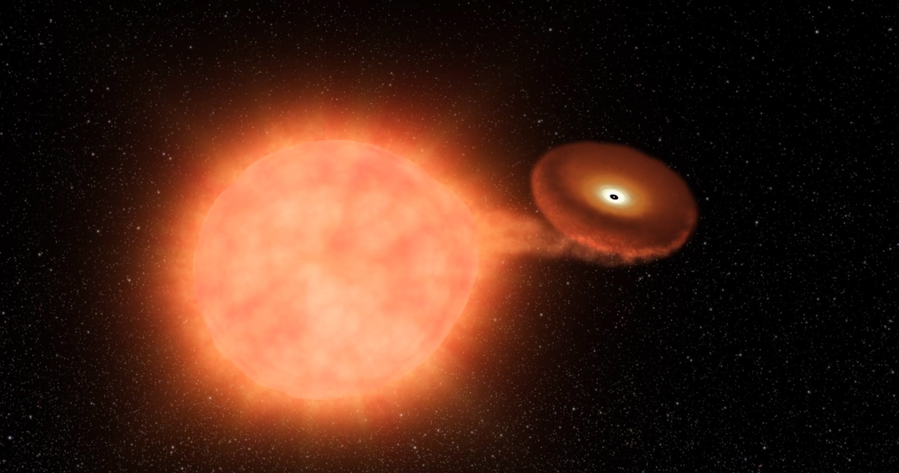

Forrige side🙂 🙁Til slutt...PADLET
Supernova type Ia (WOW, side 54 av 53, nå går det over stokk og stein!)

I dobbeltstjernesystemer der den ene stjernen er en hvit dverg og den andre har blitt en kjempestjerne så kan materiale fra kjempestjernen bli sugd over til overflaten av den hvite dvergen hvis stjernene er nærme nok.
Ettersom lag på lag med glovarm gass legger seg rundt overflaten til den degenererte hvite dvergen, blir denne hvite dvergen varmere og varmere samtidig som den nærmer seg Chandrasekhar grensen.
Til slutt nåes temperaturen der karbon og oksygen begynner å fusjonere videre til tyngre grunnstoffer. Men akkurat som i et heliumflash så starter fusjoner i hele stjernen omtrent samtidig på grunn av degenererte gassers enorme varmeledningsevne. Hele stjernen blir sprengt i stykker.
Siden stjernen har en masse nær Chandrasekhargrensen når dette skjer, så vil energien som frigjøres alltid være omtrent den samme. Dette gjør at denne type supernova kan brukes som standardlyskilde.